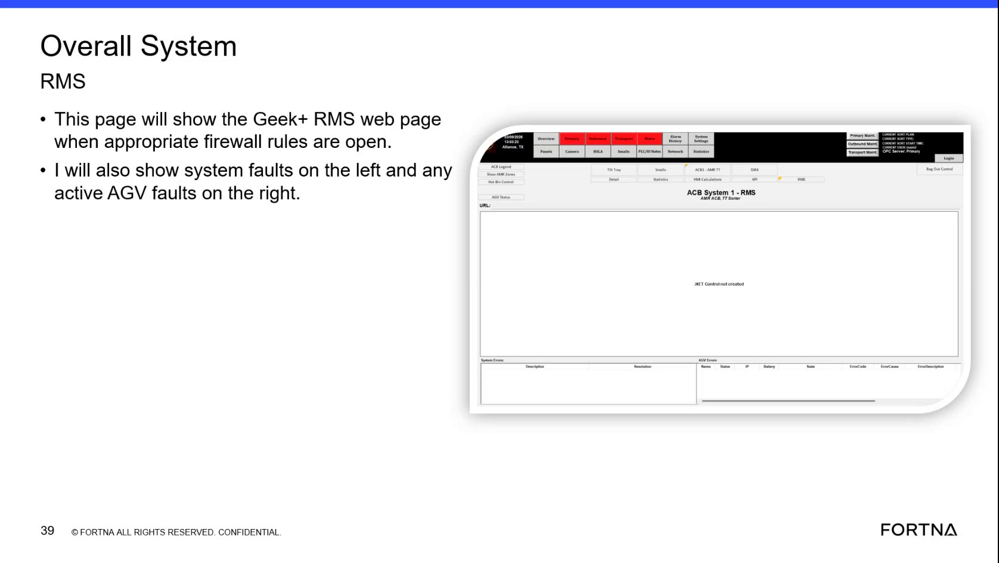

| Procedure ID | proc_check_overall_system_faults_and_active_agv_faults_overall_system_rms_v1 |
|---|---|
| Title | Check Overall System Faults and Active AGV Faults on the Overall System RMS Page |
| Procedure Type | diagnostic |
| Primary Role | L1_support |
| Support Safe | Yes |
| Capability Tags | fleet_system_status, agv_active_errors |
| Access Surface | rms_ui |
| Audience Roles | L1_support |
| Failure Pattern Tags | None |
| Validation Status | needs_sme_review |
| Merge Status | source_finalized |
Perform a first-pass live check on the RMS / fleet status UI (Geek+ RMS web page) to determine whether the system has any system faults (left side) and whether any AGVs have active faults (right side).
Use when a caller reports a potential fleet/system issue and you need a quick overview of (1) system faults and (2) any active AGV faults visible on the Overall System RMS page.

Responsible role: L1_support
Instruction:
Open the RMS / fleet status UI (Geek+ RMS web page) for the site and navigate to the Overall System RMS page.
Expected result:
The Overall System RMS page loads and shows the two fault areas: system faults on the left and active AGV faults on the right.
Stop or Escalate If:
Responsible role: L1_support
Instruction:
On the Overall System RMS page, look at the left-side “system faults” area and determine whether any system faults are listed/present.
Expected result:
You can state whether the left-side “system faults” area shows one or more fault entries or is empty/not showing faults at the time of the check.
Responsible role: L1_support
Instruction:
On the same Overall System RMS page, look at the right-side “active AGV faults” area and determine whether any active AGV faults are listed/present.
Expected result:
You can state whether the right-side “active AGV faults” area shows one or more fault entries or is empty/not showing faults at the time of the check.
Responsible role: L1_support
Instruction:
If the left “system faults” area and/or the right “active AGV faults” area shows entries, report those fault indications to support. If both areas are empty/not showing faults, report that no system faults/active AGV faults are currently displayed on this page.
Expected result:
A clear statement is provided indicating whether system faults are present on the left and whether active AGV faults are present on the right at the time of the check.
Stop or Escalate If: